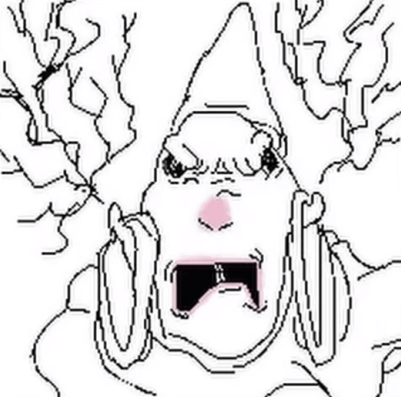

The hamster, fueled with rage from your betrayal (leaving it to be bullied by the devils), it has transformed into a wizard hamster! After obtaining his unfathomable power, he fights back against the devils and wins >:D. This is not entirely good due to it still carrying the grudge of you abandoning it, making you its next target, and pulverizing you. Yeowch D:.